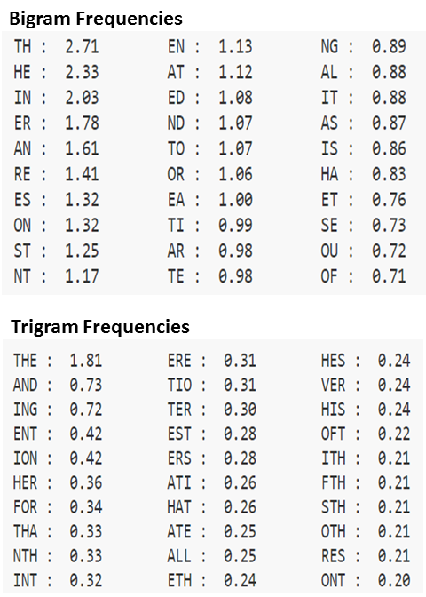

{% extends "page.html" %}
{% block content %}
Notes
Bigram and trigram frequencies are useful in deciphering basic encryptions for which each letter corresponds to a different encrypted letter. Using the tables below, we can guess which encrypted sequences correspond to common word snippets. Note that this strategy takes some detective work and will not work if employed on a short encrypted string.

{% endblock %}